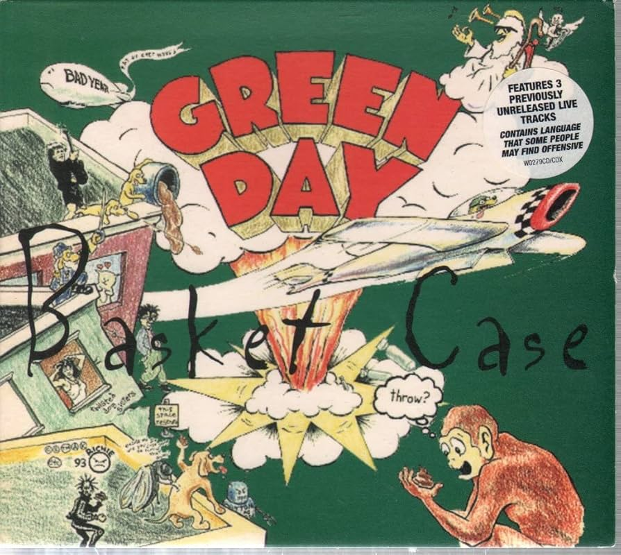
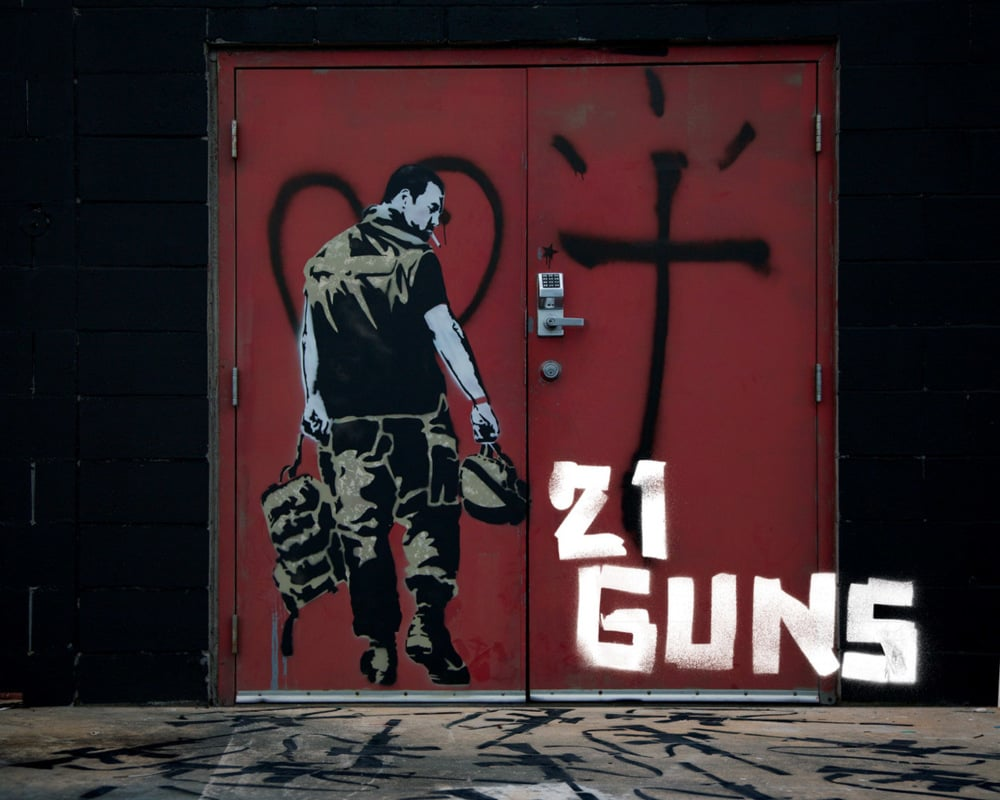

Green Day telah merilis banyak lagu sepanjang karier mereka, dan banyak di antaranya masih populer hingga
saat ini, meskipun industri musik dunia terus berkembang. Berikut adalah beberapa lagu ikonik terbaik
dari Green Day.
Basket Case

"Basket Case" adalah salah satu lagu paling ikonik dari album ketiga Green Day, "Dookie," yang
dirilis pada tahun 1994. Ditulis oleh Billie Joe Armstrong dan diproduksi oleh Rob Cavallo, lagu ini
membantu meluncurkan Green Day ke puncak popularitas dan mendefinisikan kembali punk rock di era
1990-an.
Lirik "Basket Case" mencerminkan perasaan kecemasan dan serangan panik yang dialami Armstrong,
menjadikannya sangat resonan dengan banyak orang yang mengalami masalah serupa. Video musiknya, yang
menampilkan Armstrong di rumah sakit jiwa dengan situasi aneh dan konyol, memperkuat tema lirik dan
menambah daya tarik visualnya.
"Basket Case" mendapatkan pujian luas dan menduduki puncak berbagai chart musik, termasuk Billboard
Modern Rock Tracks. Lagu ini adalah salah satu dari lima single yang dirilis dari "Dookie," dan
berkontribusi pada kesuksesan album yang menjadi salah satu album punk rock terlaris sepanjang masa.
Hingga saat ini, "Basket Case" tetap menjadi salah satu lagu andalan Green Day dalam konser dan
terus dikenang sebagai salah satu lagu terpenting dalam sejarah punk rock.
American Idiot
Lagu "American Idiot" dari Green Day, yang dirilis pada 21 September 2004, merupakan kritik tajam
terhadap budaya pop dan politik Amerika Serikat di era 2000-an. Ditulis sebagai bagian dari album
konsep dengan nama yang sama, lagu ini mengecam media massa dan pemerintahan Presiden George W.
Bush, mencerminkan ketidakpuasan generasi muda terhadap kondisi sosial dan politik saat itu. Dengan
lirik seperti "Don't wanna be an American idiot," lagu ini menyoroti ketidakpuasan terhadap
pandangan politik dominan dan manipulasi media.
"American Idiot" tidak hanya menjadi hit global, tetapi juga mempengaruhi musik punk rock dan pop
punk di tahun 2000-an. Lagu ini meraih kesuksesan besar, memuncaki tangga lagu di berbagai negara,
dan album "American Idiot" memenangkan Grammy Award untuk Album Rock Terbaik. Selain itu, lagu ini
menginspirasi sebuah musikal Broadway yang mendapatkan pujian kritis, menjadikannya salah satu karya
Green Day yang paling berpengaruh dan ikonik.
21 Guns

Lagu "21 Guns" dari Green Day, dirilis sebagai singel pada 16 Februari 2009 dari album 21st Century
Breakdown, adalah sebuah balada rock yang mendalam dengan tema anti-perang dan pencarian jati diri.
Ditulis oleh Billie Joe Armstrong, Mike Dirnt, dan Tré Cool, lagu ini menggambarkan perasaan
frustrasi dan keraguan dalam menghadapi konflik dan kekacauan global. Dengan lirik yang kuat seperti
"Do you know what's worth fighting for when it's not worth dying for?", lagu ini menggugah pendengar
untuk memikirkan makna sebenarnya dari perjuangan dan pengorbanan.
"21 Guns" mendapat sambutan positif dari kritikus musik dan berhasil mencapai kesuksesan komersial,
memuncaki tangga lagu di beberapa negara dan mendapatkan sertifikasi platinum di beberapa tempat.
Lagu ini juga dinominasikan untuk Grammy Award dan dikenal sebagai salah satu lagu yang menegaskan
kembali kualitas kreatif Green Day di era modern. Melalui musiknya yang penuh emosi dan lirik yang
provokatif, "21 Guns" terus menjadi salah satu lagu yang menonjol dalam katalog Green Day dan
merefleksikan tema-tema besar dari album 21st Century Breakdown.